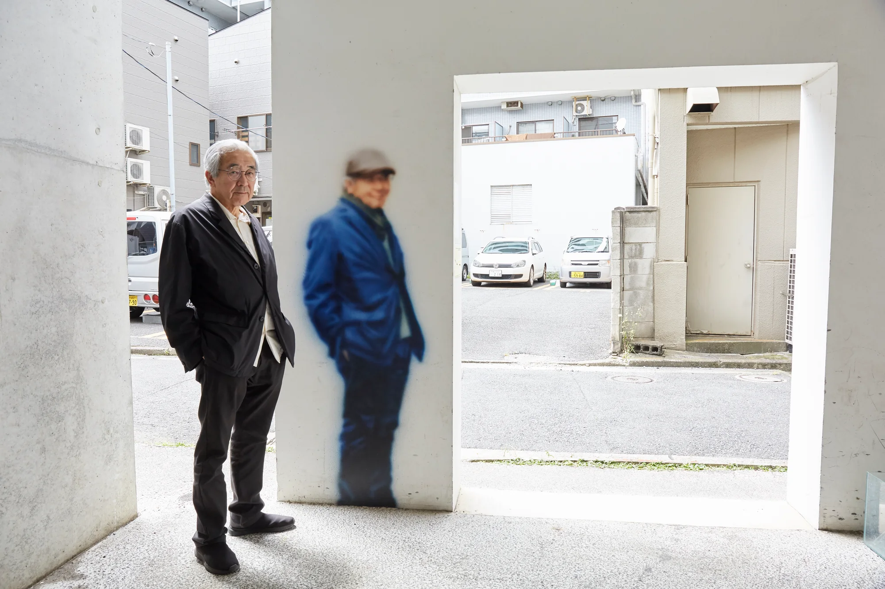
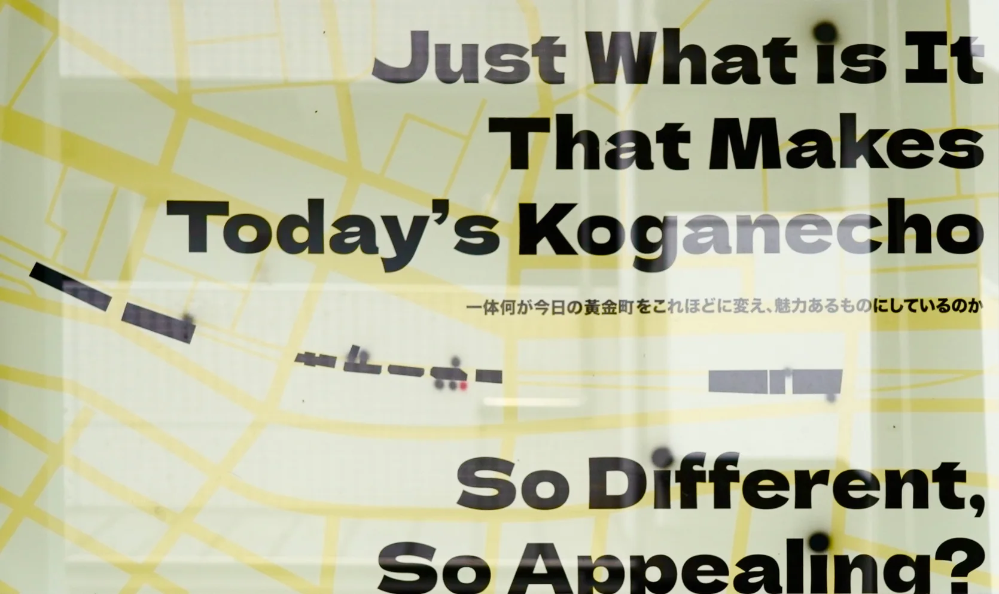
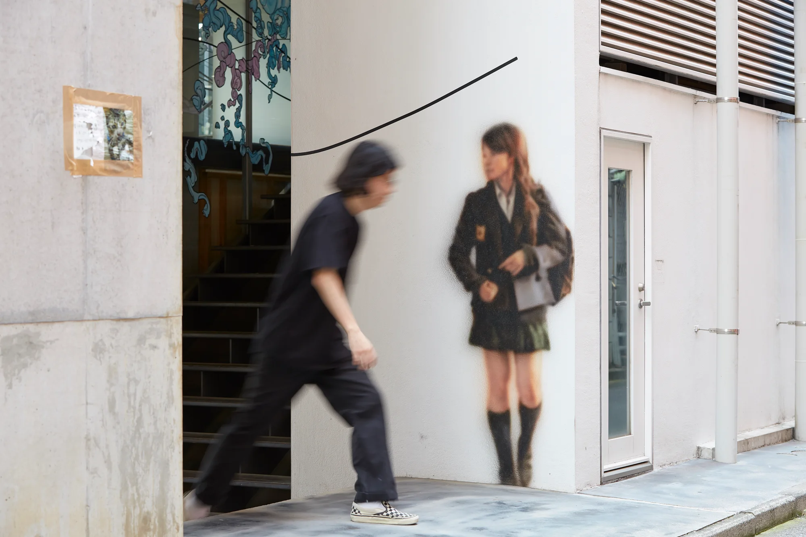
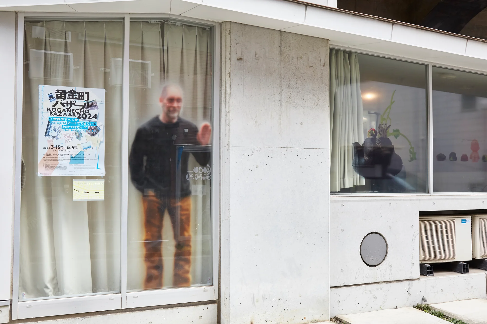
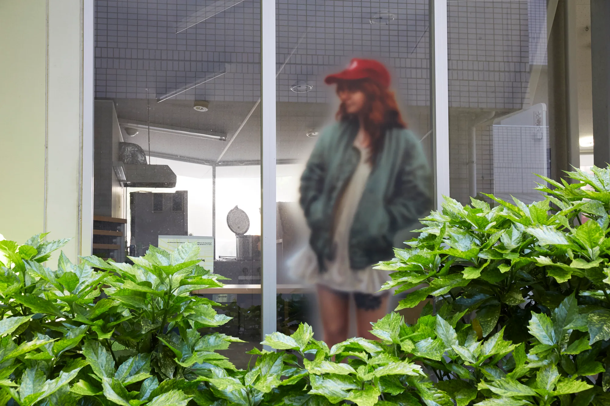
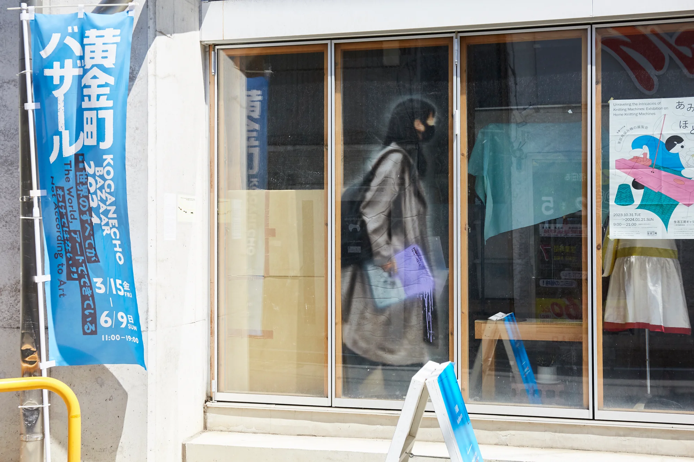
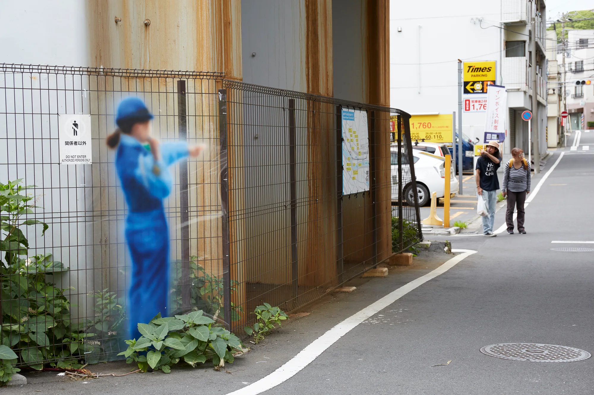
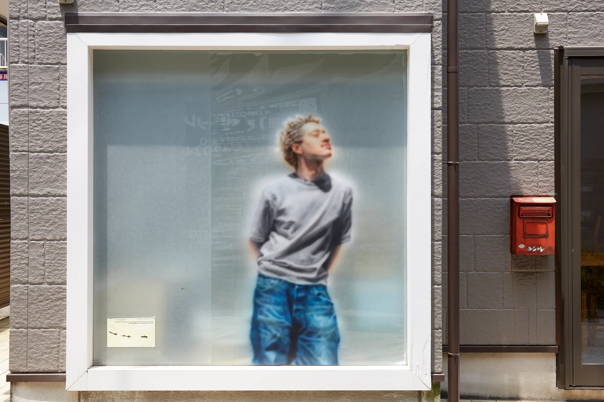
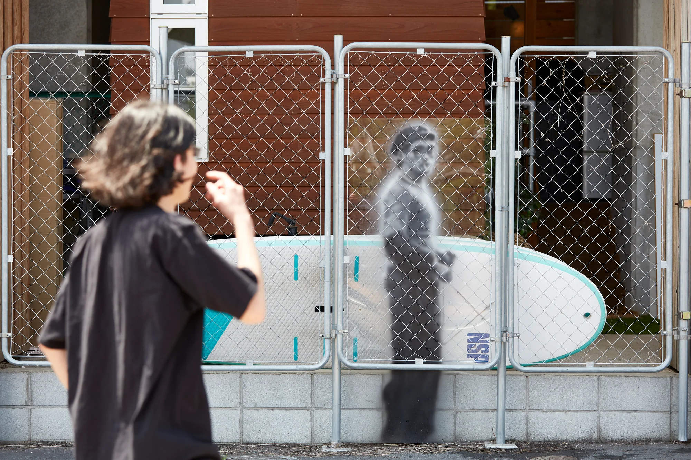
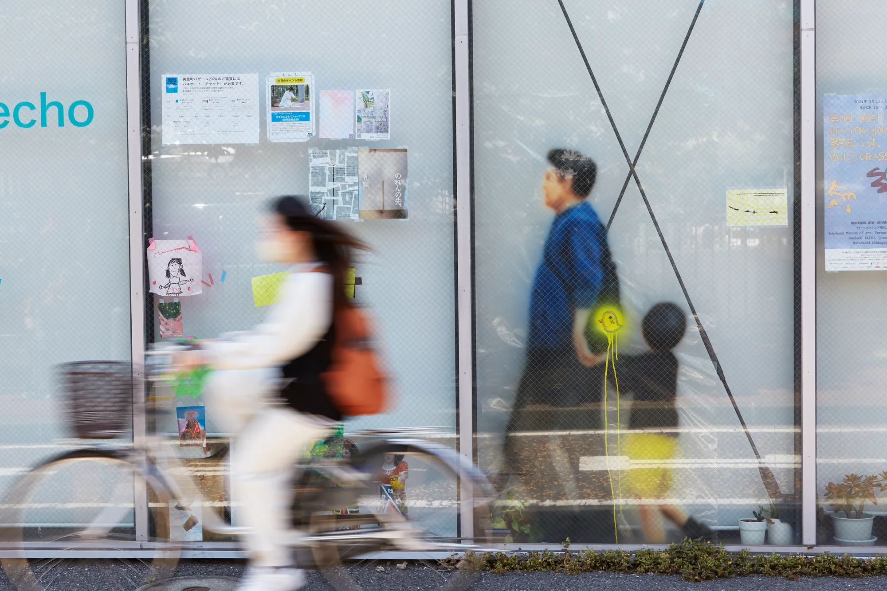

是什麼使今天的黃金町如此不同，如此充滿魅力？
Just What is It That Makes Today’s Koganecho So Different, So Appealing?
2024

吳柏葳的作品多圍繞在繪畫、觀者與場所的相互關係，常以現地製作的形式，在場所裡外畫出模糊的人影，並透過所繪的人物身份，在觀眾與作品之間，展開諸如展覽機制、觀看方式等討論。身為一個初次到訪的藝術家，我揀選了此處歷史照片中的人物以及在此駐村的藝術家及辦公室人員，並將他們模糊地畫在黃金町各處的牆壁門窗上，讓不同時代的人物，在平面的圖層下乍現。畢竟在此處駐留的人來來去去，我想短暫的保留這些改變黃金町的人物，陪伴觀眾思考在黃金町複雜的歷史脈絡中，究竟是什麼使今天的黃金町如此不同，如此充滿魅力？
Read in English
WU PUWEI focuses on the relationships between the painting, the viewers and the site. He usually works on site, painting blurry figures at venues. Through the depiction of these figures, WU initiates discussions between the viewers and the artwork regarding exhibition mechanisms and ways of seeing. He selected individuals from historical photographs as well as current artists and staff of Koganecho Area Management Center, and painted each as a blurry figure on walls and windows throughout this area, allowing figures from different eras to emerge on the flat layer. Given the fact that people here always come and go, he aims to temporarily preserve these figures who have contributed to the transformation of Koganecho. Wu hopes they serve as company with viewers to think about what makes today's Koganecho so different, so appealing within the complex historical context of Koganecho area.
現場與細節
VIEWS & DETAILS







